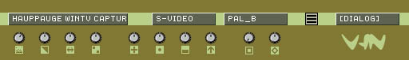

eleKtroniKa
help file
video input module (in/out)
get video stream from video capture device (DV firewire/analog capture/webcam)

input/output
1 video out
properties
video input device, source and standard
video capture deinterlace
video input dialog
controls for brightness, contrast, hue, saturation, sharpness, gamma correction, white balance,
gain correction, zoom correction and aspect correction
copyright aestesis
2004
www.aestesis.org